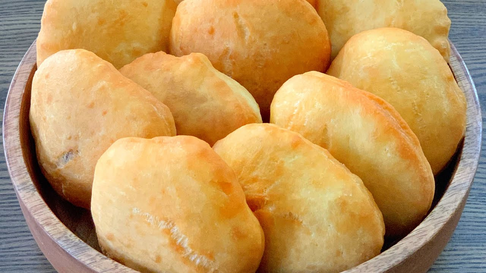

Back

Description
Float is used in most Caribbean Breakfasts. It can be filled with any filling of your choosing.It is light,fluffy and versitile
Ingredients
- Flour
- Water
- Oil
- Salt
- Sugar
- Yeast
Steps
- Add two pounds of flour in big bowl
- Add half table spoon of Sugar
- Add half table spoon of Salt
- Add Yeast
- Add two teaspoons of Oil while mixing
- Add two hundred millitre of water slowly while mixing until doughy
- Let dough rise for 15 minutes covered with a fabric kitchen towel
- Place frying pain on fire with oil 2 inches deep
- Make small discus shapped dough and place in Oil. Flip when floats when reaady on one side